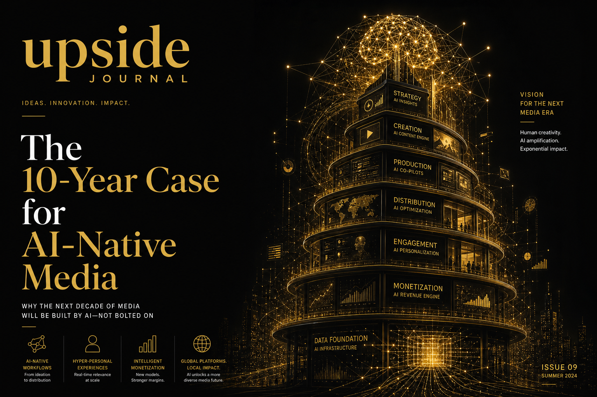

Most media companies are adding AI to their existing operations. A handful are building from the ground up with AI as the foundational architecture. Over the next decade, the second group will replace the first.
This is not a prediction about technology. It is a prediction about economics.
The Cost Structure Revolution
Traditional media companies operate on a cost structure designed in the 1990s and modified at the margins ever since. The core unit economics: a newsroom of N journalists producing X articles per day at a cost of Y per article, monetised through advertising at Z CPM.
Every variable in that equation is under pressure. Journalist salaries have risen 22 per cent since 2020. Article production costs (editing, fact-checking, legal review, design) have increased 18 per cent. Advertising CPMs for text-based editorial have declined 31 per cent. The math does not work. It has not worked for a decade. Legacy media survives on a combination of brand inertia, investor patience, and periodic cost-cutting that degrades the product.
AI-native media companies start with fundamentally different economics:
Research costs drop 70–80 per cent. AI-assisted research tools can synthesise earnings calls, regulatory filings, patent databases, and social signals in minutes. A task that took a journalist two days now takes two hours — and the quality of source coverage is higher.
Production costs drop 50–60 per cent. AI-assisted writing, editing, formatting, and image generation do not replace journalists — they eliminate the mechanical overhead that keeps journalists from doing what they do best: analysing, interviewing, and forming editorial judgments.
Distribution costs approach zero. AI-optimised headline testing, audience segmentation, and cross-platform formatting mean an AI-native publication can reach more targeted readers at lower cost than a legacy competitor with ten times the distribution team.
The result: an AI-native media company can produce the same quality and volume of editorial output at 30–40 per cent of the cost of a traditional competitor. Over ten years, that cost advantage compounds into an insurmountable moat.

The Quality Paradox
Critics argue that AI-assisted media will inevitably be lower quality. The opposite is true, provided the AI is deployed correctly.
The quality problem in modern media is not a lack of talented journalists. It is that talented journalists spend 60–70 per cent of their time on tasks that do not require journalistic skill: data gathering, source transcription, formatting, SEO optimisation, social media distribution, and administrative coordination.
An AI-native newsroom inverts this ratio. Journalists spend 70 per cent of their time on the high-value activities that define editorial quality — source cultivation, investigative analysis, narrative construction, and editorial judgment. AI handles the remaining 30 per cent: the mechanical, repetitive, and data-intensive work that machines do better than humans.
This is not theoretical. At Upside Journal, we are living this model. Our editorial process uses AI tools to accelerate research, generate first-draft structures, and produce visual assets — while human editors make every substantive decision about what gets published, how it is framed, and what standards it must meet.
The output is not "AI content." It is human journalism with AI leverage.
The Five-Layer Architecture
Based on our experience and analysis of the emerging AI-native media landscape, we see five architectural layers that define a 2036-ready media company:
Layer 1: Intelligence Ingestion. Continuous, AI-powered monitoring of data sources relevant to your beat. For Upside Journal, this means real-time tracking of venture deals, regulatory filings, patent applications, social conversations, and macroeconomic indicators across global markets. The system does not write stories — it identifies them.
Layer 2: Editorial Decision Engine. A human-in-the-loop system that surfaces story candidates ranked by relevance, timeliness, audience interest, and competitive gap. The AI proposes; the editor disposes. This layer is where editorial judgment — the most valuable and least automatable skill in media — operates at peak efficiency.
Layer 3: Production Pipeline. AI-assisted writing, editing, fact-checking, image generation, and formatting. Each step includes human review gates. The goal is not to remove humans but to amplify their output by 3–5x.
Layer 4: Distribution Optimisation. AI-driven headline testing, audience segmentation, cross-platform formatting (blog, newsletter, LinkedIn, X, podcast), and timing optimisation. A single piece of editorial content can be intelligently adapted for six platforms without a dedicated social media team.
Layer 5: Feedback Loop. Continuous measurement of engagement, subscription conversion, and audience growth feeding back into Layers 1 and 2. The system learns what resonates, with whom, and why — improving story selection and production quality over time.
The Market Opportunity
The global digital media market generates approximately $650 billion in annual revenue. Of that, an estimated $180 billion flows to companies that produce original editorial content (as opposed to platforms, aggregators, and distributors).
Over the next decade, we project that AI-native media companies will capture 25–35 per cent of that $180 billion — roughly $45–63 billion in annual revenue by 2036. The capture will come primarily from:
Legacy publishers that fail to adapt (estimated 40 per cent of current revenue at risk)
New market creation through hyper-niche publications that were not economically viable under traditional cost structures
Creator-to-institution evolution as successful individual creators build AI-native media companies around their personal brands
Tools and platforms in the broader ecosystem — from ConcordeApp for event-driven content to The Pitch Journey for founder storytelling — will form the infrastructure layer on which AI-native media operates.
What We Are Building
Upside Journal is not a blog with AI tools. It is a proof of concept for the AI-native media model. Every article we publish, every newsletter we send, and every social asset we create passes through a workflow designed to demonstrate that a small team with AI leverage can produce editorial output that competes with — and often exceeds — publications running ten times the headcount.
The 10-year case is this: the media companies that win in 2036 will be the ones that treated AI not as a feature but as their operating system. Not AI-assisted. AI-native.
We are building that company in public. The results will speak for themselves.
YouTube Embed: CBC News: The National — National AI Strategy Draft — Coverage of national AI strategy developments shaping media and technology policy.
About the Authors
Chaste Inegbedion — Chaste is an editorial contributor at Upside Journal, covering long-horizon scenarios in climate, longevity, and the future of work.
Olusegun (Olu) Olufunmiloye — Olu is the Publisher of Upside Journal, founder of CNE Concepts Ltd, CNE Studios and Cocoa Soft Africa. He writes thought pieces with focus on using AI in 2026 for business.